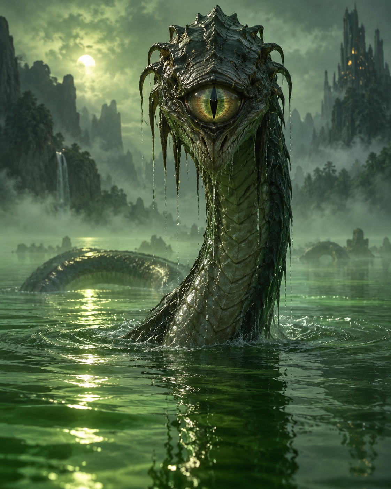

ROLE
Lake Guardian
Nerava waits beneath the water, guarding what remains after the destruction of her species.

THE LAST OF THE FLOWING KIND
The Lake Guardian
“Return what was taken. Restore the fluidity.”
Ancient. Powerful. Grieving. Protective. Nerava is the creature beneath the lake, the last survivor of a species destroyed when the Skolraw drained its world.
WHO IS NERAVA?
Nerava is the last of the Flowing Kind, an ancient species destroyed after the Skolraw drained the world on which they depended. She remains beneath the lake, carrying the memory of everything that was taken from her people.
Kevin awakens her through one of his impulsive mistakes. Faced with an enormous and furious creature, he cannot rely on strength. He has to listen, understand and accept the harm that has been done.
What begins as a terrifying encounter changes because Kevin responds with compassion. Nerava becomes an unexpected ally, proving that even an ancient anger can make room for hope.
AT A GLANCE
ROLE
Nerava waits beneath the water, guarding what remains after the destruction of her species.
HERITAGE
She is the last survivor of an ancient people whose lives depended upon the fluidity stolen from their world.
ENEMY
The draining of her world destroyed the Flowing Kind and left Nerava carrying the grief of an entire species.
TURNING POINT
Kevin's mistake wakes her, but his willingness to care transforms fear and anger into an unlikely alliance.
STORY APPEARANCES
Nerava is introduced in The Four Rings, when Kevin's actions awaken the ancient guardian beneath the lake.
AN UNEXPECTED ALLIANCE
Kevin is responsible for waking Nerava, but he also gives her a reason to see him as something other than another threat.
ONE SURVIVOR. ONE CHANCE TO RESTORE A WORLD.
Nerava has survived the loss of her species and the draining of her world. Her demand is simple, even if fulfilling it is anything but: restore the fluidity and repair what was broken.
Meet the Rest of the Cast